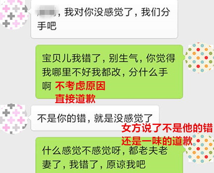

官方二维码
免费情感热线电话
4006-299-520

官方二维码
免费情感热线电话
4006-299-520

有一种分手叫“我对你已经没感觉了，我们分手吧”，听到这个理由，相信很多人都一头雾水，恋爱中什么叫感觉？怎么会没感觉了？
所谓的感觉，就是指客观刺激作用于感觉器官所产生的对事物个别属性的反映。在恋爱中，感觉的含义是指对方让自己感兴趣，愿意去探索，给自己愉悦的一种感受。她说对你没感觉了是什么意思？是指她对你已经不感兴趣了，你身上没有任何一个点能吸引她。
不要因为她对你“没感觉”了而惶恐，因为“没感觉”而分手，至少说明你们之间没有直接矛盾，仅仅是她不喜欢你了，只要找到正确的挽回方式，你可以轻松挽回她。今天我们来分析一下你在挽回中犯的错误，从而总结出正确的挽回方式。
“没感觉”是一个中性的词，表示她对你没有了喜爱的感觉，但同样没有厌恶的感觉。会有一些男人，用错误的挽回方式，硬生生的将没感觉转变成了厌恶。
当她说对你没感觉了之后，你的第一反应是不是觉得自己忽略了她，然后各种在她面前刷存在感？不断的给她发短信，打电话，想接她下班，送她回家，还各种买买买，自己都要被自己感动哭了。
那么她会不会感动的飞奔到你的怀里跟你复合？当然不会！你的这种不断刷存在感的行为在她眼里就是死缠烂打围追堵截，原本对你没什么负面感觉，现在也开始感到厌恶了。等这种负面感觉积累到一定程度，你面临的就是被拉黑。
还有一部分男人，不管发生了什么，都是第一时间道歉，希望对方不要生气，一副“好好好，都是我的错，原谅我吧”的态度。她说对你没感觉了，跟你分手，不是因为你犯了什么错误，你都没犯错，她原谅你什么？
上面是一个学员分手时的错误示范，当女方提出分手的时候，这个学员根本没有去考虑原因，第一时间就开始道歉，当女方强调不是她的错，只是没感觉了的时候，还是一味的道歉。这种道歉有意义吗？只会让女方觉得你很敷衍。
还有一些人，对她下各种承诺保证，许诺一辈子都对她好，承诺结婚后怎样怎样，还保证自己绝对不会犯错误怎样怎样。你自己考虑一下，她都不喜欢你了，你的承诺对她来说有什么用吗？就跟狮子跟老虎保证自己绝对不会去吃小鹿一样，她只会说“关我屁事？”。
承诺多了不值钱，当你可以随随便便把承诺说出口的时候，她对你能够信守承诺的期待度也不会太高。
因为“没感觉”而分手，绝对不是因为你们相处产生了什么矛盾分歧导致的，最根本的原因是你自身没有了吸引她的地方。对此，最有效的挽回方式，就是提升你自己，增加魅力，重新将她吸引。
或许看到这里，经常看我的文章的人就会说：老师，怎么又让我断联，这次她对我没有负面情绪，不需要给她时间和空间去释放这种情绪啊，我不是应该趁热打铁去挽回她吗？
你在前半部分说的很对，因为“没感觉”而分手，她确实对你没有负面情绪，但你同样需要断联一段时间。这是为什么呢？这要从两性交往的最初原因说起。
两性之间为什么开始交往，是因为对对方感兴趣，想进一步交往，深入了解对方，这是对陌生人的新鲜神秘感决定的。随着双方接触的频率逐渐增强，对对方的好奇心逐渐得到满足。等到双方转为情侣关系，日日相处之后，就会逐渐了解到了对方的全部，就会丧失这种新鲜神秘感，从而丧失兴趣。
当你跟她断联之后，在断联的期间，她无法接触到你的生活，不知道这段时间你经历了什么，对你又有了陌生感，从而恢复了这种新鲜神秘感。当你重新跟她接触的时候，她又会对你感兴趣，重新对你好奇起来，她还会“没感觉”吗？
为什么她会对你没感觉？无非是你对她丧失了吸引力，她不再对你感兴趣。如果你对她重新有了吸引力，她自然会对你有感觉。
你可能又要问我：“老师，我长得不高大也不英俊，怎么才能有吸引力？”不要把吸引力简单的定义为外貌上的优越，不是所有的魅力型男都高大英俊。充实自己，培养自己的兴趣爱好，努力去学习和工作，去拓展你的朋友圈，这自然会提升你的吸引力。
当你将你正面积极的形象展示给她的时候，她当然会对你感到好奇，被你重新吸引。她会觉得你是个有价值的人，跟你在一起是有意义的事情。选择了你就是融入了你的世界，代表她今后的生活会跟你一样的精彩。
女人不会对一个一眼就能看透的男人感兴趣。猜测是女人的天性，她们会通过你的一言一行一举一动来揣测你的心理。如果你能让她捉摸不透，她就会对你好奇，继而加大对你的情感投入，不搞明白你的想法不罢休。你若有似无的好感，飘忽不定的联系，都会让她对你产生浓厚兴趣。
怎样构建这种飘忽不定的心态呢？首先你要深入了解女性心理，掌握男女思维方式的差异。然后你要稳住自己心态，不要患得患失，对挽回不要操之过急。你要做到不是主动去接近她，而是吸引她接近你。
如果要详细来说，会占用大量篇幅，你有不明白的地方，可以留言问我。